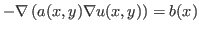
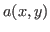
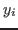
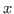
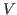
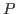
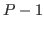
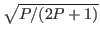
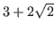
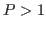

Next: About this document ...
Stochastic Galerkin method is a popular tool for solving differential equations with uncertain data. We consider a second order scalar elliptic partial differential equation


is not determined exactly. We use a truncated Karhunen-Loeve expansion of and with either uniformly or normally distributed of random variables
. Variable
is a spatial variable. Weak formulation and finite element discretization of the space part of the solution and polynomial chaos expansion of the stochastic part of the solution lead to a system of linear equations, the dimension of which is huge. Then efficient preconditioning techniques are demanded. We introduce a hierarchical multilevel preconditioning method obtained from a splitting of approximation spaces
with respect to stochastic variables. Especially, we deal with approximation of the stochastic part of the solution by complete polynomials of order
. We consider a splitting of into the direct sum of the complete orthogonal polynomials of order
and of the rest of . As one of the main results, we prove that for the uniform distribution of (and thus for Legendre orthogonal polynomials), the corresponding Cauchy-Buniakowski-Schwarz constant is bounded by
and thus the condition number of the two-by-two block preconditioned matrix of the problem is less than
for any
.